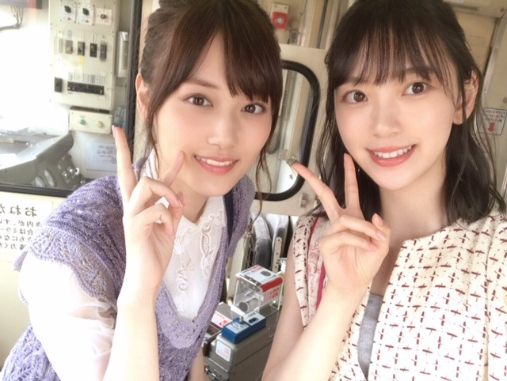

2019/0818Sun梅干し確保
やほう
くしゃみと鼻水がとまらない〜！
そして喉もやられています
何か花粉飛んでるかな？？？
まさか、秋花粉？？
アレルギー体質すぎて何に反応してるか分からず...


路面電車の街 のmv撮影は鈍行列車に揺られてずっと眠かったです。笑
完成したmvを見たら、なんだかほろっと泣ける話になっていました
ぜひ！
そういえばモバメでウィッグを被って金髪にしました〜って騒がせちゃいました。笑
へへへ〜
ごめんね、
染めてないよ〜☺︎
でもいつか役とかで染めれたらいいな
ベリーショートにもしてみたい！！


夏があっという間に終わっちゃうね☺︎
この間、日奈子とみり愛と絢音と蘭世と遊んだの！
次のブログに書きます。
めーちゃ楽しかったよ。ずっとふざけてる。笑
大好き❤︎

NHKサッカーのCMのとき。
いつかサッカーの試合生で見たいなぁ
実はスポーツ観戦好き☺︎
水泳、バレーボールも興味あります☺︎
ではでは
あ、また美味しそうな梅干し買いました！
塩分17%と15%のやつ！たのしみたのしみ
2019/08/18 14:42
コメント(364)
いつも楽しみにしてます！
スポーツ観戦が好きということですがラグビーは見たことありますか？
スポーツ観戦が好きということですがラグビーは見たことありますか？
未央奈さん、鼻水とか止まらないと言うのは、花粉症の為ですかね。
神宮コンサートの為にも早く症状が治まれば良いですね。
2期生のメンバーとお出かけしたんですか、本当に2期生メンバーは仲が良いですね。(=^ェ^=)
神宮コンサートの為にも早く症状が治まれば良いですね。
2期生のメンバーとお出かけしたんですか、本当に2期生メンバーは仲が良いですね。(=^ェ^=)
未央奈～☆☆
金髪、ビックリしたよ～
完全に信じてた。笑
あれ？今日エイプリルフールだっけ？とか
なにか金髪の役が決まったのかなーとか
綺麗だなー、でもどういう想いで金髪にしたんだろう？とか
一瞬で色々考えちゃったよ。
最終的には、何か仕事の理由だったり、
未央奈の揺るぎない想いがあってのことだったら
未央奈自身が変わる訳じゃないから
金髪も綺麗だしいいんじゃないかなーって思ってたんだけどね。
鼻と喉は大丈夫？
大事にしてね。
金髪、ビックリしたよ～
完全に信じてた。笑
あれ？今日エイプリルフールだっけ？とか
なにか金髪の役が決まったのかなーとか
綺麗だなー、でもどういう想いで金髪にしたんだろう？とか
一瞬で色々考えちゃったよ。
最終的には、何か仕事の理由だったり、
未央奈の揺るぎない想いがあってのことだったら
未央奈自身が変わる訳じゃないから
金髪も綺麗だしいいんじゃないかなーって思ってたんだけどね。
鼻と喉は大丈夫？
大事にしてね。
みおなーー⸜❤︎⸝
路面電車MVめっちゃ何回も見た！笑
一瞬あの教室思い出した、、♡
可愛かったああ
みおなほんとに金髪にしたのかと思った！
今のままでも金髪でも未央奈は可愛いの！⸜❤︎⸝笑
梅干し食べる！笑
路面電車MVめっちゃ何回も見た！笑
一瞬あの教室思い出した、、♡
可愛かったああ
みおなほんとに金髪にしたのかと思った！
今のままでも金髪でも未央奈は可愛いの！⸜❤︎⸝笑
梅干し食べる！笑
未央奈どの写真も可愛いブログ更新ありがとう！
くしゃみだけじゃなく鼻水も止まらないんだね。僕もよく鼻炎になって水のような鼻水が止まらなくなるよ。
辛いよね。早く良くなるといいね。
路面電車の街のMVすごく好き。ずっと電車乗ってると眠くなるよね。笑
金髪びっくりしたよー。でも似合ってて可愛かった。未央奈はどんな髪色も髪型も似合うね。驚かせてファンを翻弄するようなお茶目なところも好き！
夏はあっという間だけど仲の良いメンバーと遊べて良かったね。楽しそうで良かった。
スポーツ観戦好きなんだね。なんか意外。
相変わらず未央奈は梅干し好きだねー。微妙な塩分の差でどう違うのか気になる。
では！
くしゃみだけじゃなく鼻水も止まらないんだね。僕もよく鼻炎になって水のような鼻水が止まらなくなるよ。
辛いよね。早く良くなるといいね。
路面電車の街のMVすごく好き。ずっと電車乗ってると眠くなるよね。笑
金髪びっくりしたよー。でも似合ってて可愛かった。未央奈はどんな髪色も髪型も似合うね。驚かせてファンを翻弄するようなお茶目なところも好き！
夏はあっという間だけど仲の良いメンバーと遊べて良かったね。楽しそうで良かった。
スポーツ観戦好きなんだね。なんか意外。
相変わらず未央奈は梅干し好きだねー。微妙な塩分の差でどう違うのか気になる。
では！
野球好き？
かわいい➰
金髪にはビックリでした、でも結構似合ってましたよ
MV見ましたよ、かわいいー
金髪にはビックリでした、でも結構似合ってましたよ
MV見ましたよ、かわいいー
堀さん、こんばんは。
堀さんはいつも瞳が輝いてるんですね。どの写真もお綺麗です。
MVは切ないけれど前向きな話ですね。３人が一緒になることで、もし光が居たらって考えから解放されたってことに思えました。
それで金髪には、車の屋根に乗るの以上に翻弄されてしまいました。すぐ慣れるくせに変化を恐れるという僕の悪い癖です。まあでも堀さんが小悪魔的で可愛いので全て良しですね。
梅干しで塩分とるの良いですね。まだまだ暑いので僕も水分と塩分とりますね。
ブログ更新してくれて嬉しいです。次のブログも楽しみにしてますね。
堀さんはいつも瞳が輝いてるんですね。どの写真もお綺麗です。
MVは切ないけれど前向きな話ですね。３人が一緒になることで、もし光が居たらって考えから解放されたってことに思えました。
それで金髪には、車の屋根に乗るの以上に翻弄されてしまいました。すぐ慣れるくせに変化を恐れるという僕の悪い癖です。まあでも堀さんが小悪魔的で可愛いので全て良しですね。
梅干しで塩分とるの良いですね。まだまだ暑いので僕も水分と塩分とりますね。
ブログ更新してくれて嬉しいです。次のブログも楽しみにしてますね。
好き。
ほりっぴ～、ナンチです♪
ブログ更新ありがとう～
お盆休みが終わってしまった～
両親と温泉行ってのんびりして
高校野球見て感動して
友達が出演している舞台を観て
などなど
でも一番はほりっぴ～から755でレスもらったことかも
そして一番びっくりしたのもほりっぴ～金髪化だったし、やっぱりほりっぴ～の存在は大きいなぁとあらためて思ったお盆休みでした
ブログ更新ありがとう～
お盆休みが終わってしまった～
両親と温泉行ってのんびりして
高校野球見て感動して
友達が出演している舞台を観て
などなど
でも一番はほりっぴ～から755でレスもらったことかも
そして一番びっくりしたのもほりっぴ～金髪化だったし、やっぱりほりっぴ～の存在は大きいなぁとあらためて思ったお盆休みでした
夏を満喫してください 仲良い皆で遊んだ話、早く聞きたいです
洋服は真ん中の写真あたりが感じよし がんばって
洋服は真ん中の写真あたりが感じよし がんばって
モバメ見た時ビックリした笑
金髪も似合ってるけど黒髪が一番好き！！
金髪も似合ってるけど黒髪が一番好き！！
お疲れ様です!
未央奈～～～～～。
美月～～～～～～。うへへへへへ。
いい女だぜ～～～。うへへへへへ。
で、夏が終わりそうで良かったです。
未央奈と美月って、ちと似てるかも。美しすぎる点で。ナンチャッテ。
じゃ。
美月～～～～～～。うへへへへへ。
いい女だぜ～～～。うへへへへへ。
で、夏が終わりそうで良かったです。
未央奈と美月って、ちと似てるかも。美しすぎる点で。ナンチャッテ。
じゃ。
大好きな未央奈ちゃんおはよう‼️私もスポーツ観戦してみたい。特に高校野球見てみたいけど、この暑さに耐えられるか不安 準決勝で未央奈ちゃんの地元岐阜県代表中京学院大中京対私の出身石川県代表の星稜です。両チームとも全力で楽しんで頑張ってほしいですね‼️いつか未央奈ちゃんの始球式見てみたい。暑い日が続きますが、水分、塩分補給をこまめにするなどして、体調管理をして元気な未央奈ちゃんでいてね‼️皆が今日も１日元気で幸せに過ごせますように 大好きやおー
未央奈ちゃん更新ありがとー！
アレルギーって大変だよねー。
自分も敏感だから困ってる(>_<)
路面電車の街、毎日聴いてるよ！
曲調が心地よくて良きです！
いつか本当に路面電車に揺られながら聴きたいなー。
まだまだ暑い日が続くので
未央奈ちゃんも体調には気をつけてね！
次のブログ楽しみにしてるね！
アレルギーって大変だよねー。
自分も敏感だから困ってる(>_<)
路面電車の街、毎日聴いてるよ！
曲調が心地よくて良きです！
いつか本当に路面電車に揺られながら聴きたいなー。
まだまだ暑い日が続くので
未央奈ちゃんも体調には気をつけてね！
次のブログ楽しみにしてるね！
未央奈と美月が大好きなので、この写真は最高のプレゼントです。
大阪のライブにも行ったけど、こちらも最高の時間でした。
大阪のライブにも行ったけど、こちらも最高の時間でした。
路面電車の街のMV見たよ！
それぞれの演技がとても良かった！
堀ちゃんのガチな金髪もいつかドラマとかで見てみたいな！
それぞれの演技がとても良かった！
堀ちゃんのガチな金髪もいつかドラマとかで見てみたいな！
おはようございます‼︎
ブログ更新、ありがとうございます♪
未央奈のブログは、自分の日常の中の楽しみの1つ。
握手会の際にも、そんなことを伝えさせていただきました。
もちろん未央奈が楽しんでいることが前提なので、無理のない程度に、適時更新していただけると嬉しいです♪
『路面電車の街』のMV、観ましたよ‼︎
人の車の上に腰掛けたり、未央奈好みのシュールな感じもあって(笑)、味のあるMVですね♪
振り返っている青春の思い出も、キラキラし過ぎていない感じ。
『ホットギミック』にも通じるものがあるかもしれません。
また、未央奈、美月ちゃん、飛鳥ちゃんというユニットの組み合わせが、自分としてはとても嬉しかった…‼︎
ビジュアル的には無敵ですね♪
そうそう、ビジュアルといえば、未央奈のベリーショート。
自分も見てみたい‼︎
いずれそのうち、チャレンジしてもらえると嬉しいです♪
さて、今週は比較的気温も下がって、例年並みになるそうです。
暑い日が続いていたので、ちょっとホッとしますね…‼︎
連戦が続いていた高校球児たちも、少し安心していることと思います♪
あ、そうそう、岐阜県代表の中央学院大中京、ベスト4に残ってますね‼︎
岐阜県代表が夏の甲子園ベスト4に残るのは10年ぶりとのこと。
頑張ってほしいですね‼︎
ではでは、また。
今日も未央奈にとっていい1日になりますように♪
ブログ更新、ありがとうございます♪
未央奈のブログは、自分の日常の中の楽しみの1つ。
握手会の際にも、そんなことを伝えさせていただきました。
もちろん未央奈が楽しんでいることが前提なので、無理のない程度に、適時更新していただけると嬉しいです♪
『路面電車の街』のMV、観ましたよ‼︎
人の車の上に腰掛けたり、未央奈好みのシュールな感じもあって(笑)、味のあるMVですね♪
振り返っている青春の思い出も、キラキラし過ぎていない感じ。
『ホットギミック』にも通じるものがあるかもしれません。
また、未央奈、美月ちゃん、飛鳥ちゃんというユニットの組み合わせが、自分としてはとても嬉しかった…‼︎
ビジュアル的には無敵ですね♪
そうそう、ビジュアルといえば、未央奈のベリーショート。
自分も見てみたい‼︎
いずれそのうち、チャレンジしてもらえると嬉しいです♪
さて、今週は比較的気温も下がって、例年並みになるそうです。
暑い日が続いていたので、ちょっとホッとしますね…‼︎
連戦が続いていた高校球児たちも、少し安心していることと思います♪
あ、そうそう、岐阜県代表の中央学院大中京、ベスト4に残ってますね‼︎
岐阜県代表が夏の甲子園ベスト4に残るのは10年ぶりとのこと。
頑張ってほしいですね‼︎
ではでは、また。
今日も未央奈にとっていい1日になりますように♪
プチ2期生会ですねー(*´ω｀*)
アレルギー？大丈夫ですか？神宮までに戻ると良いですが( ˙꒳˙ )
アレルギー？大丈夫ですか？神宮までに戻ると良いですが( ˙꒳˙ )
なんか…夏だね。
未央奈ちゃん寒暖差アレルギーとかじゃないの？
あっ、駅に着く！！！
未央奈ちゃん寒暖差アレルギーとかじゃないの？
あっ、駅に着く！！！
僕もくしゃみと鼻水止まらないです…
白い歯が現れて微笑みがこぼれる未央奈がイイ、ほんとにイイ
貴重な1枚...やっぱり笑っている素顔は可愛い
う～ん、たまらん1枚！
口をすぼめた愛嬌のある顔にも惚れこんじゃう
貴重な1枚...やっぱり笑っている素顔は可愛い
う～ん、たまらん1枚！
口をすぼめた愛嬌のある顔にも惚れこんじゃう
野球やろうぜ！
野球もおもしろいから観戦してね
野球もおもしろいから観戦してね
みおなちゃん最近推してます!! 大好き!!!
美月ちゃんとのツーショットかわいすぎる～
美月ちゃんとのツーショットかわいすぎる～
あれはビックリしたもんな！
最初、何かの役に決まったのかなって？思い
いきなりモバメで金髪に染めたよってきたから
染めたんだなって思っちゃったよ笑
NHKの女子ワールドカップの時もNHKで宣伝してたよね！
未央奈ちゃん意外と観戦するの好きなんだね！
俺も好き！野球しか興味ないけど笑
市販のユニフォームとかインターネットショッピングで買ったりはしてないの？
是非、プロ野球も楽しいから観戦するなら野球が
オススメだな！
最初、何かの役に決まったのかなって？思い
いきなりモバメで金髪に染めたよってきたから
染めたんだなって思っちゃったよ笑
NHKの女子ワールドカップの時もNHKで宣伝してたよね！
未央奈ちゃん意外と観戦するの好きなんだね！
俺も好き！野球しか興味ないけど笑
市販のユニフォームとかインターネットショッピングで買ったりはしてないの？
是非、プロ野球も楽しいから観戦するなら野球が
オススメだな！
ツーショット写真可愛いね。でも、未央奈推しの僕からしたら、未央奈のほうが、お姉さんです。やっぱり、未央奈が、一番好きです。ソロの写真も素敵です。怒んないでね、オデコの広い娘も好きです。賢い人って額が広い人が多いって言うけど、未央奈は、回転が早くていつも何かしら考えてそうだよね。コメントも面白いし。ちょっと過ごしやすくなってきたから、もう一頑張りしましょう。
まあ楽しんでください
みおなちゃん。ブログありがとう。3枚目、4枚目の画像好き。わたしは、クーラーのかけすぎで喉やられています。夏ももうすぐおわりですね。夏の締めくくり、神宮熱くなって、盛り上がりましょう。
ブログ更新ありがとう♡
バレーボール見るの私も好き！
スポーツ観戦楽しいよね～
梅干しいいね！暑い時に食べたくなるよね☺︎
日奈子ちゃん達との話楽しみにしてるね♪
バレーボール見るの私も好き！
スポーツ観戦楽しいよね～
梅干しいいね！暑い時に食べたくなるよね☺︎
日奈子ちゃん達との話楽しみにしてるね♪
やほう～♡
外で撮ってる写真は特にぐっときます☆
待ち合わせにやってきた感がありますよー♪
毎日会えてる感じがしてとっても嬉しいな♡
今夏はとっても充実した気分ですよ～☺
外で撮ってる写真は特にぐっときます☆
待ち合わせにやってきた感がありますよー♪
毎日会えてる感じがしてとっても嬉しいな♡
今夏はとっても充実した気分ですよ～☺
甲子園の方も明日は準決勝なんだよ。
第一試合が履正社対明石商
第二試合が中京学院大中京対星稜
明日で決勝で戦う２チームが決まってしまうんだよ
ここまで来たらね、岐阜県に優勝旗を持って帰ってほしいって未央奈ちゃんは思ってるよね？笑
明日からはナゴヤドームで首位巨人を迎えての
三連戦
第一試合が履正社対明石商
第二試合が中京学院大中京対星稜
明日で決勝で戦う２チームが決まってしまうんだよ
ここまで来たらね、岐阜県に優勝旗を持って帰ってほしいって未央奈ちゃんは思ってるよね？笑
明日からはナゴヤドームで首位巨人を迎えての
三連戦
僕もスポーツ見るのは好きです
スポーツするのは苦手です
スポーツするのは苦手です
こんばんはお疲れさま☺
花粉症なん？
大丈夫かい✨
今はどうなんやろ？
気をつけてね。
写真観ていたらますますべっぴんさんやね☺
梅干し✨
大好きです☺
今日は短めでごめんね。
ではではまたね☺
ほなね、堀ちゃん☺
花粉症なん？
大丈夫かい✨
今はどうなんやろ？
気をつけてね。
写真観ていたらますますべっぴんさんやね☺
梅干し✨
大好きです☺
今日は短めでごめんね。
ではではまたね☺
ほなね、堀ちゃん☺
梅干しサイコー(´∇｀)/
白を着る人に惹かれる
てか、未央奈が好き笑笑
野球も見てねー！！
てか、未央奈が好き笑笑
野球も見てねー！！
どの学校が優勝しても初らしい！
決勝どうなるかな？
俺的には履正社対中京学院大中京が見たいな～
未央奈ちゃんは明日と22日は楽しみな一週間になるね？
決勝どうなるかな？
俺的には履正社対中京学院大中京が見たいな～
未央奈ちゃんは明日と22日は楽しみな一週間になるね？
未央奈めっちゃかわいすぎる！夏バテとか気おつけてね！
こんばんみーお♪
ブログありがとう！
土曜から今日まで連休だったのに
何をするでも無く過ぎてしまった。。。
まぁ、体調を整えたと思えばいいのかなぁ〜？
みおも、体調には気をつけてね。
アレルギーの様な症状は免疫低下かもしれないから、
睡眠と栄養をしっかりと摂ってね！
2期の仲良しさん達との交流は良きだね☆
きっと一生の友になるだろうから
大切にね☆
あと、お母さんとの時間も大切にね！
一緒に外出したりする時間って
限られて来ると思うし。。。
まぁ、みおは、そこを意識しているよね☆
あ、雨降ってる。。。
明日は晴れるといいなぁ〜
では、またね！
わたる⊿
ブログありがとう！
土曜から今日まで連休だったのに
何をするでも無く過ぎてしまった。。。
まぁ、体調を整えたと思えばいいのかなぁ〜？
みおも、体調には気をつけてね。
アレルギーの様な症状は免疫低下かもしれないから、
睡眠と栄養をしっかりと摂ってね！
2期の仲良しさん達との交流は良きだね☆
きっと一生の友になるだろうから
大切にね☆
あと、お母さんとの時間も大切にね！
一緒に外出したりする時間って
限られて来ると思うし。。。
まぁ、みおは、そこを意識しているよね☆
あ、雨降ってる。。。
明日は晴れるといいなぁ〜
では、またね！
わたる⊿
未央奈ちゃんは小さい頃、名古屋に憧れた時もあったりした？
ナゴヤドームじゃなくても東京ドームや神宮とかで中日のユニフォームを着て観戦してる所、想像つかないな笑
未央奈ちゃん一回は生で見るのも悪くないよ？
ナゴヤドームじゃなくても東京ドームや神宮とかで中日のユニフォームを着て観戦してる所、想像つかないな笑
未央奈ちゃん一回は生で見るのも悪くないよ？
あっという間に夏の季節も終わってしまうなんて、何だか寂しいよね。
でもすぐ秋の季節がやって来て軈ては
寒い冬の季節になっていってしまうんだね。季節の移り変わりって早いと思うと何だか切なくなる気持ちにもなるんだ。
モバメで未央奈のロングの金髪の写真送られてきて、ちょっとびっくりしたよ。改めてこのブログ読んだ時にウィッグのロングの金髪なんだなと知り、少しだけホッとしているよ。
でもすぐ秋の季節がやって来て軈ては
寒い冬の季節になっていってしまうんだね。季節の移り変わりって早いと思うと何だか切なくなる気持ちにもなるんだ。
モバメで未央奈のロングの金髪の写真送られてきて、ちょっとびっくりしたよ。改めてこのブログ読んだ時にウィッグのロングの金髪なんだなと知り、少しだけホッとしているよ。
こんばんは。
ブログ更新ありがとうです。
アレルギー大丈夫ですか？
私は色々な花粉症で毎年春と秋がきついです！
早く良くなってほしいです。
あのメールの金髪は少しびっくりしました～
でも可愛いかったよ✨
プチ二期生の話し待ってます。
体調に気を付けて頑張ってね
ブログ更新ありがとうです。
アレルギー大丈夫ですか？
私は色々な花粉症で毎年春と秋がきついです！
早く良くなってほしいです。
あのメールの金髪は少しびっくりしました～
でも可愛いかったよ✨
プチ二期生の話し待ってます。
体調に気を付けて頑張ってね
あまおうゼリー確保
そう 美味しそうな梅干が4種類くらいあった、でも買わず 美味しそうな ひとくちゼリーが3種類あって、3種類買った
冷蔵庫のちょっと大きめのボールに全部入れた
「おれは かぶと虫なのか」いえ 違います
最後の写真 指ながーい いや 顔が小っさいのか
いや どっちもか
そう 美味しそうな梅干が4種類くらいあった、でも買わず 美味しそうな ひとくちゼリーが3種類あって、3種類買った
冷蔵庫のちょっと大きめのボールに全部入れた
「おれは かぶと虫なのか」いえ 違います
最後の写真 指ながーい いや 顔が小っさいのか
いや どっちもか
ちょっと、、、かわいすぎる
こんばんはお疲れさま✨
昨夜に続きで再びコメントします☺
書けなかった、高校野球のん。
やはり俺は関西の２校を応援します☺
どちらが勝つか？
星稜と中京学院中京も勿論楽しみです☺
野球人としての血が騒ぐ(笑)✨
堀ちゃんは岐阜を代表しての応援してください。
ではではまたね✨
ほなね、堀ちゃん☺
昨夜に続きで再びコメントします☺
書けなかった、高校野球のん。
やはり俺は関西の２校を応援します☺
どちらが勝つか？
星稜と中京学院中京も勿論楽しみです☺
野球人としての血が騒ぐ(笑)✨
堀ちゃんは岐阜を代表しての応援してください。
ではではまたね✨
ほなね、堀ちゃん☺
未央奈ちゃんありがとうございます！頑張ります‼今日もお仕事頑張って下さい！気をつけて下さい。気をつけます‼頑張ります‼頑張って下さい！楽しみにしてます‼
未央奈ちゃん、おはようございます。
路面電車の未央奈ちゃんカワイイ、サッカーの未央奈ちゃんも可愛い。
金髪のモバメにはびっくりしたけど、楽しいびっくりをありがとう。嬉しいです。
猛暑から秋雨に変わったけど、良い体調で過ごしてくださいね。
神宮で未央奈ちゃんとアイコンタクト出来ることを期待しています。
乃木坂46と頑張ってるcuteでsmartな未央奈ちゃんを応援しています。
路面電車の未央奈ちゃんカワイイ、サッカーの未央奈ちゃんも可愛い。
金髪のモバメにはびっくりしたけど、楽しいびっくりをありがとう。嬉しいです。
猛暑から秋雨に変わったけど、良い体調で過ごしてくださいね。
神宮で未央奈ちゃんとアイコンタクト出来ることを期待しています。
乃木坂46と頑張ってるcuteでsmartな未央奈ちゃんを応援しています。
高校野球見てる？ちょうど今日準決勝なんだけど
中京学院大中京対星稜の試合やってるよ！
結果は後で話すよ！
未央奈ちゃんもいそがしかもしれないから？
中京学院大中京対星稜の試合やってるよ！
結果は後で話すよ！
未央奈ちゃんもいそがしかもしれないから？
堀さん、こんにちは♪
路面電車の街 のＭＶを見ました。
最初、人が倒れてるシーンがあり
そのそばを２人の女性が歩いていました。
広島県には路面電車が走ってそうです。
山下さんとの写真ありがとう。
堀さんはスポーツ観戦が好きなのですね。
今日は星稜高校の野球の試合を見ました。
解説者が「奥川投手のストレートは手元で
動いているのです。」というようなことを
言ってました。
僕は純粋なフォーシームのストレート
だけ投げてます。
堀さん、体調に気を付けて
お仕事頑張ってね☆
ではまたコメントしますね☆
路面電車の街 のＭＶを見ました。
最初、人が倒れてるシーンがあり
そのそばを２人の女性が歩いていました。
広島県には路面電車が走ってそうです。
山下さんとの写真ありがとう。
堀さんはスポーツ観戦が好きなのですね。
今日は星稜高校の野球の試合を見ました。
解説者が「奥川投手のストレートは手元で
動いているのです。」というようなことを
言ってました。
僕は純粋なフォーシームのストレート
だけ投げてます。
堀さん、体調に気を付けて
お仕事頑張ってね☆
ではまたコメントしますね☆


京セラ大変な盛り上がりで熱気が凄かったです。
未央奈さんの汗だくになりながらのパフォーマンス
している姿素敵でした。
トロッコから凄く近い席でタオル気付いて貰えて
指差して手を振って下さり嬉しかったです。
未央奈さん綺麗だったな〜夏の1番の思い出に
なりました、ありがとうございます。
まだまだ暑い日が続きそうなのでお身体を御自愛下さい